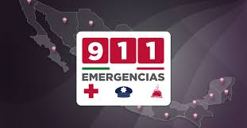

Números de Emergencia
Policía: 911
Bomberos: 911
Ambulancia: 911
Hospitales Cercanos
Hospital General de Valladolid
Dirección: Calle 42 No. 203, Valladolid, Yucatán
Teléfono: +52 985 856 1222
Cómo Evitar Estafas
1. No aceptes ayuda de extraños con cajeros automáticos.
2. No compartas información personal con personas desconocidas.
3. Usa servicios oficiales de transporte.
Lugares Menos Recomendados
1. Evita zonas desconocidas durante la noche.
2. Evita áreas con poca iluminación.
3. Consulta con los locales sobre zonas seguras.